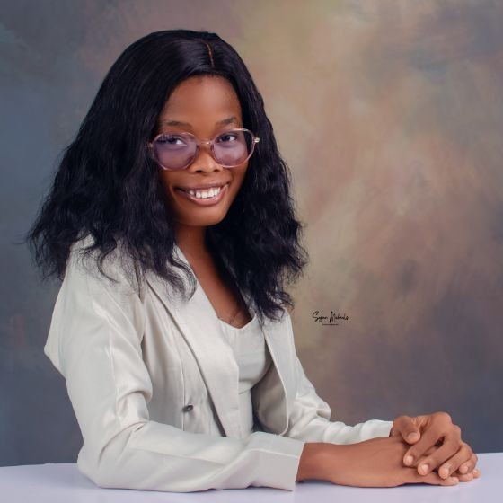

Brain Signal Analysis · Machine Learning · Neurostimulation
I am an Erasmus Mundus Joint Master's student in Neuroscience and Data Science, with a background in Computer Science and Mathematics. My research focuses on neural signal processing and neuromodulation for brain-targeted therapy, and my master's thesis is on EEG-Synchronized Online Transcranial Ultrasound Stimulation (TUS) of the Human Thalamus to Study the Function of Sleep Spindles for Memory Processing.
I work at the intersection of neuroscience, computational modelling, and machine learning — decoding brain signals and exploring non-invasive ways to modulate them.
I am passionate about bridging machine learning and neuroscience to better understand the brain and develop meaningful applications. I enjoy working with neural signals, computational modeling, and noninvasive brain stimulation, and my interests lie in AI, neural data analysis, and brain-computer interfaces.
I am open to research and job opportunities at the intersection of brain and data science, whether in academia or industry, and eager to contribute to teams working where neuroscience meets machine learning.
Full EEG preprocessing and spectral feature extraction pipeline. Implemented NCA and Lasso feature selection to identify spectral biomarkers; applied SHAP explainability to quantify which frequency bands and electrode locations drive classification performance.
Replicated the Shoeb et al. (2010) spectral feature pipeline using an 8-band filterbank (0.5–25 Hz) with 2-second sliding windows to capture preictal EEG dynamics. Benchmarked Logistic Regression, Random Forest, and SVM classifiers.
Replicated multi-domain EEG feature extraction (spectral, complexity, connectivity) from Zheng et al. (2023). Benchmarked SVM, Random Forest, and LightGBM classifiers to distinguish AD patients from healthy controls.
Undergraduate thesis: YOLOv8-based engagement detection system trained on the DAiSEE dataset, providing real-time student engagement feedback to lecturers during live sessions.
Full academic and industry CV — updated regularly. Download and share freely with recruiters.